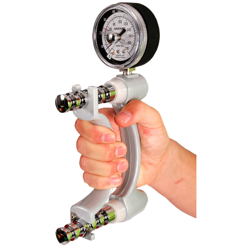

Hand Grip Basico
Mejora tu fuerza de agarre con nuestro Hand Grip Básico, el compañero perfecto para fortalecer tus manos y antebrazos. Diseñado para ser compacto y fácil de usar, este hand grip es ideal para entrenamientos en casa o en la oficina. Aumenta tu resistencia y destreza con este accesorio esencial. ¡Potencia tu rendimiento y alcanza tus metas de entrenamiento con nuestro Hand Grip Básico!

Hand Grip Regulable
Optimiza tu entrenamiento con nuestro Hand Grip Regulable, una herramienta versátil diseñada para adaptarse a tus necesidades de fortalecimiento. Ajusta fácilmente la resistencia según tu nivel de habilidad, permitiéndote progresar a tu propio ritmo.

Dinamometro 100kg
Mide y registra tu fuerza de manera sencilla con nuestro Dinamómetro Básico. Perfecto para evaluar la fuerza de agarre, este dispositivo compacto y fácil de usar es ideal para usuarios de todos los niveles. Obtén mediciones precisas y sigue tu progreso de manera eficaz. El Dinamómetro Básico es la herramienta esencial para evaluar y mejorar tu fuerza de manera práctica.

Dinamometro 80kg
Experimenta un nivel superior de precisión con nuestro Dinamómetro Avanzado. Diseñado con tecnología de vanguardia, este dispositivo ofrece mediciones detalladas y personalizables de tu fuerza. Su interfaz avanzada te permite realizar evaluaciones más exhaustivas, proporcionando datos precisos para tu análisis.